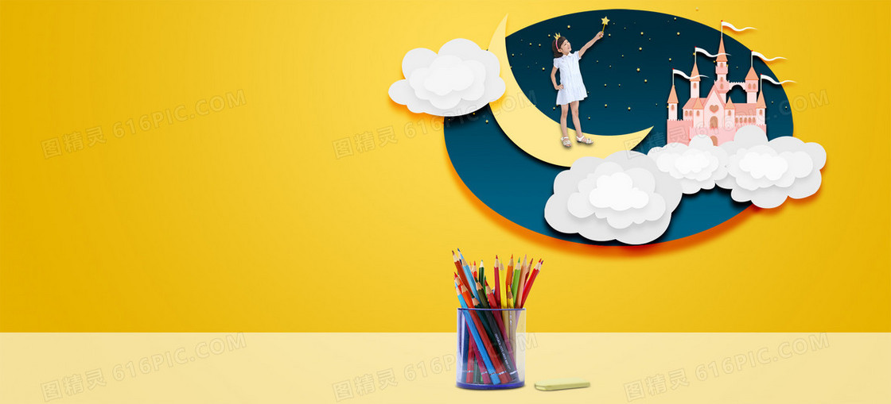

- 

网站的介绍
学习网站实质上就是一个基于网络资源的专题研究、协作式学习系统。它通过网络学习环境，向学习者提供足够多的专题学习资源、提供相关的协作学习和交流工具，让学习者自己选择想要研究的课题或项目设计，通过自己收集、分析并筛选有用的信息资料，应用相关知识，去解决实际问题。它强调的是通过学习者自主性的探索、研究、协作来求得问题解决，从而让学习者体验和了解科学探索过程，提高学习者获取信息、分析信息、加工信息的实践能力和培养良好的创新意识与信息素养。
网站的优点
学习网站既不同于综合性教育网站，也不同于网络课程，它有自己的一套建设目标。
1、提供先进的教学资源创作与管理应用平台
专题学习网站应以专题为导向，提供结构化的专题知识库。网站集合与专题相关的各个学科的知识点，打破传统的知识结构和顺序，在综合多门学科知识的基础上，重新组建有序的、符合学生认知规律和特点的知识模块。从而达到资源高度整合、增加学习资源的趣味性、可读性的目的。网站应以教师为主要创作者，充分体现教师的教学思想与智慧，同时还应满足学生自主学习与教师备课的双重需要，提高资源的利用率。
2、提供良好的网络协作学习工具
支持基于网络的研究性学习强调通过学习者主体性的探索、研究、协作来求得问题解决，从而让学习者体验和了解科学探索过程，提高学习者获取信息、分析信息、加工信息的实践能力和培养良好的创新意识与信息素养。
3、广泛参与、分散开发、集中使用的实施方式
让师生广泛参与网站建设;所有专题与实际教学密切相关，它必须有特定的受众群，究竟供哪门学科、哪个层次的教师和学生使用，具有很强的针对性和明确性;网站建设采用资源分散开发，集中使用的实施原则;强调专题网站资源建设与教学试验相结合。